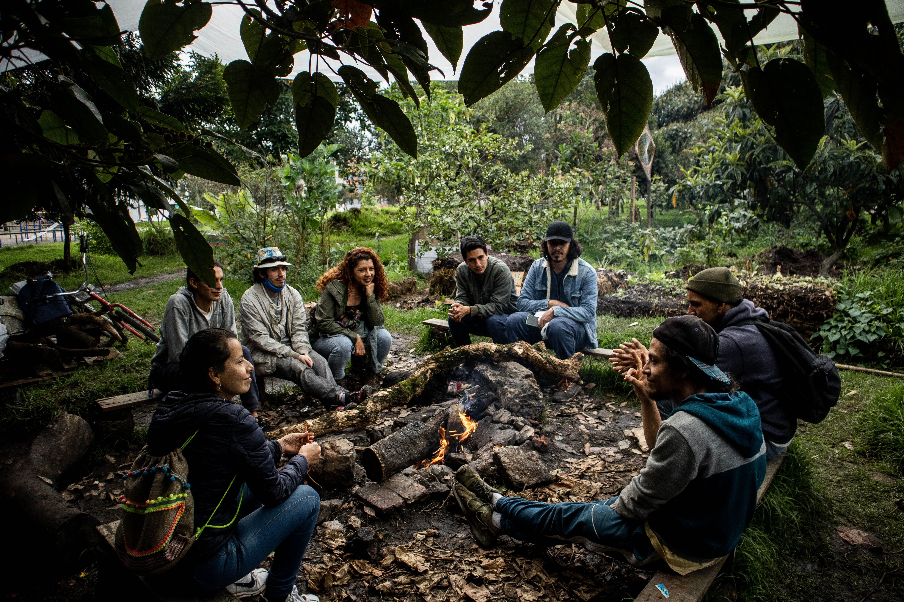

🔥 Memoria ancestral
Ruta Ancestral: de la Chupkua a la montaña
Una experiencia de interpretación cultural junto a memorias muiscas, caminos rurales y saberes de la sabana.

Lo que hace única esta ruta
- Recorres la vía Suba–Cota, entre veredas campesinas y el borde de la Reserva Forestal Regional del Norte Thomas van der Hammen.
- Conoces la historia de la vereda Chorrillos: cerca de 2.000 habitantes que esperaron hasta 2021 la llegada del acueducto y hoy defienden su territorio rural.
- Aprendes por qué el río Bogotá se llamaba Funza («Varón Poderoso») y cómo los muiscas lo veneraban como fuente de vida y fertilidad.
- Escuchas las leyendas del páramo de Guacheneque y de la laguna que «brama», contadas desde la tradición oral.
- Miras hacia el cerro Majuy («dentro de ti»), territorio sagrado muisca con petroglifos y bosque alto andino.
- Incluye inmersión ancestral muisca con sabedores y guías de la comunidad.
Paradas del recorrido
Vereda Chorrillos
Agricultura, agua y defensa de la ruralidad en un ecosistema que aún no tiene figura de protección.
Reserva Thomas van der Hammen
Conectividad ecológica entre los cerros orientales y el río Bogotá, y las amenazas que enfrenta.
Cota y el río Funza
Significado del nombre Cota en lengua chibcha y la historia del río desde el páramo hasta la sabana.
Cerro Majuy y la montaña
Mitos del Mohán y Huaika, petroglifos y el trabajo de las comunidades que cuidan el territorio.
Las paradas y los tiempos exactos se confirman con Nativa al aceptar tu reserva.
Qué incluye
- Guianza local en español
- Refrigerio tradicional (bebida y alimento típico)
- Póliza de asistencia médica
- Inmersión ancestral muisca con guías y sabedores indígenas
Elementos indispensables
- Ropa impermeable: la ruta se hace con lluvia o con sol
- Zapatos cómodos y cerrados
- Agua para hidratarte
- Gorra
- Bloqueador solar
- Bicicleta en buen estado y casco (pregúntanos si necesitas alquilarlos)
Recomendaciones
- Lleva una chaqueta adicional: en la zona alta de la sabana el clima cambia rápido y refresca.
- Es un recorrido de interpretación cultural: llega con disposición para escuchar y preguntar con respeto.
- Llega a la hora acordada: la salida no espera.
Cuidemos el territorio
- Llega a la hora acordada y no te alejes del grupo.
- Escucha con atención y trata con respeto a guías, comunidad y compañeros.
- Detente solo en las paradas designadas.
- No arrojes residuos, ni siquiera orgánicos.
- No extraigas material vegetal ni animal.
- Mantén un volumen de voz moderado y evita parlantes: protegen la fauna.
- Si te sientes mal, avísale directamente al guía.
- No consumas alcohol ni sustancias psicoactivas durante la experiencia.
Reserva y cancelación
Puedes reservar hasta 48 horas antes. Una persona de Nativa confirma cupos, accesibilidad y opciones de pago. La cancelación es gratuita hasta 24 horas antes; con menos tiempo, si llegas tarde o no te presentas, no hay reembolso.
El recorrido se realiza con lluvia o con sol.